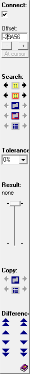
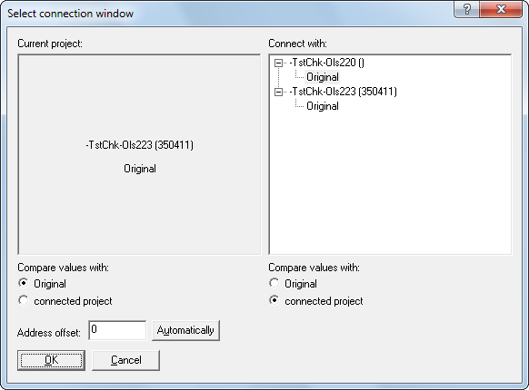
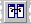

|
The dialog Select the connection window (Menu View) |

  
|
|
The dialog Select the connection window (Menu View) |
|
 |

Right Dialog: It is possible to connect window. If two windows are connected, any changes to the visible area will happen to both windows in sync. If one window is scrolled, the other one is scrolled in the same way.
If the connection is activated, this dialog is displayed to select the connection window. If you want to skip this dialog and use the window you also used last time, keep the Shift-Key pressed while selecting this option (works with pulldown menu and icon bar). Alternatively, you can click on another project in the WinOLS workspace while holding down the Shift key.
Address offset: This field contains the offset that will be used when keeping the dialogs in sync. With the 4 buttons next to it you can define how the field should be initialized now, and in the future when the dialog is skipped. With the button 'Automatic' WinOLS can search for an area in the other project which is similar to the area at the current cursor position in the current project. If such an area is found, the offset is used. The 'Cursor' button takes the current text cursor positions as the basis for the offset. The 'Scrollbar' button takes the current scroll position in the form of the first currently visible address.
|
Left Dialog:
When you're working with connected windows, a small window will appear between the projects.
Section Connect:
You have several possibilities to change the offsets (the address difference between the windows) between the windows:
| · | You may manually enter a number. |
| · | Use one of the search options. |
| · | With the buttons +/- you may change the address offset by one unit (depending on the current bit width). Hold Shift or Ctrl+Shift to make this faster. |
| · | You may click on the checkbox ‘Offset‘ to deactivate the connection. In this mode you can move one window and re-establish the connection when you found the right offset or use the button "At cursor" to calculate the offset from the 2 cursor positions. |
Section Search:
WinOLS automatically uses 5 different search modes, each in 2 directions. The program searches the project that the arrow points to and search for the data of the project that the arrow points away from. A red background means that search results are available. If the background is orange, then the current offset is one of the search results. The 5 search modes are (from top to bottom):
| 1. | Search for the data around the current cursor position |
| 2. | Search for the data around the current cursor position, but only inside the maps |
| 3. | Search for the selected data (only the first 500 selected cells are compared for performance reasons) |
| 4. | Search for the selected data, but only inside the maps |
| 5. | Search for the map that the cursor currently is on |
| 6. | Search for the map with identical ID as the one that the cursor currently is on |
Note: The search feature can slow down WinOLS noticeably. You can use the checkbox to turn it off.
Section Tolerance:
Here you can enter the desired search tolerance.
Section Result:
This section shows the result of the most recent search. The text shows the number of the current result, following by the total number of result (max. 200). You can use the "Slider" to screen through the results, which will adjust the offset. After the search function is used the slider is automatically set to the search result that is closest to the original offset. If you want to go to the results individually, click on the slider once and then use the cursor keys.
Section Copy:
Use these buttons to copy data to the respective other side:
| 1. | The currently selected cells. |
| 2. | The map under the cursor (or the currently selected maps, if multiple maps are selected). |
| 3. | The text infos from the current map on the source side to the current map on the target side. (Text infos are: Name, Id, Unit, Factor, Offset, Precision) |
| 4. | The selected comments / the comment at the cursor position. |
Section Differences:
This section is identical with the functions from the view menu. It contains buttons to move the cursor in either window to the first/previous/next/last difference. The buttons on the outer sides use the data of their side. The buttons in the middle find differences in both projects at the same time.
Section Reference Version:
Use these button to select what data should be compared to the version on either side (its own original or the original or a version from the connected project). Use the pause button to temporarily compare each side to its own original.
Tip:
You can also connect windows if you:
| · | drag one project in the project/map list and drop it onto another project |
| · | or hold shift while you click on a different hexdump window |
Shortcuts
| Symbol bar: |  |
| Keyboard: | Ctrl+2 to display the dialog |
Ctrl+Shift+2 to immediately connect (requires that exactly 2 projects are currently open)
Shift+2 to toggle the active-connection-checkbox (left dialog, top-left-corner)